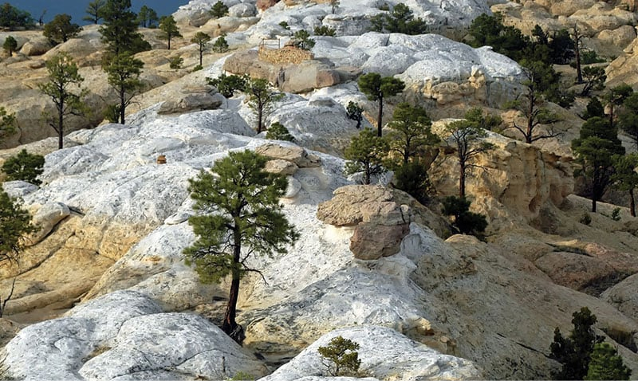

- Главная /
- Туразметки /
- Нью-Мексико – «Земля очарования»!
Нью-Мексико – «Земля очарования»!
Штат Нью-Мексико относится к так называемым «горным штатам», находится на юго-западе США. Экономика здесь не сильно развита, однако он прельщает туристов всех стран. Благодаря своей природе, историческим памятникам и дружественной атмосфере штат Нью-Мексико носит название «Земля очарования».
Прежде чем отправиться на поиск приключений, поезжайте к смотровой площадке «Сандия Пик». Весь штат с высоты 3163 метра будет виден как на ладони! Более того, добираться до точки вы будете на специальном воздушном трамвае, в котором время словно ненадолго замирает.
Прежде чем отправиться на поиск приключений, поезжайте к смотровой площадке «Сандия Пик». Весь штат с высоты 3163 метра будет виден как на ладони! Более того, добираться до точки вы будете на специальном воздушном трамвае, в котором время словно ненадолго замирает.

Для любителей истории Нью-Мексико припрятал свою столицу – Санта-Фе. В этом городе тысячу лет назад ещё жили индейцы пуэбло. Но затем город захватили испанцы, а уже потом и американцы. Именно поэтому Санта-Фе имеет необычные глиняные домики, которые штат унаследовал от его бывших «жильцов» – индейцев. Такое строение жилья помогало местным спрятаться от палящих лучей солнца! Индейская деревня в Таос-Пуэбло является объектом Мирового культурного наследия ЮНЕСКО.
Сейчас, на фоне глиняных конструкций, жители Нью-Мексико строят экодомики – иортшипы, из вторичного материала и закрытые от всех коммунальных служб! Например, электроэнергию дают солнечные батареи, а вода скапливается прямо с неба и проходит через мощную систему фильтрации, превращаясь в питьевую.
Сейчас, на фоне глиняных конструкций, жители Нью-Мексико строят экодомики – иортшипы, из вторичного материала и закрытые от всех коммунальных служб! Например, электроэнергию дают солнечные батареи, а вода скапливается прямо с неба и проходит через мощную систему фильтрации, превращаясь в питьевую.

Посмотреть на первобытные красоты над 180-метровой пропастью возможно на километровом мосту Рио-Гранде! Вид на ущелье, которое миллионы лет создавала местная река, просто бесподобный. Такое ощущение, что его обтачивала не вода, а технологии пришельцев. Вид просто фантастический!
Ежегодно в одном из городов штата Нью-Мексико – в Альбукерке – проводится один из крупнейших в мире международных фестивалей воздухоплавания.
Ежегодно в одном из городов штата Нью-Мексико – в Альбукерке – проводится один из крупнейших в мире международных фестивалей воздухоплавания.
Легенда об НЛО
Говоря об инопланетянах, жители штата Нью-Мексико сразу скажут о городе Розуэлле. Ведь его ещё называют столицей НЛО! Легенда гласит, что в 1947 году прилетел космический корабль с пришельцами на борту, над которыми проводились секретные эксперименты в подземной лаборатории. Розуэлл словно помешан на инопланетянах – все вывески, плакаты, рекламные щиты каким-то образом возвращают всех в событие 40-х годов! Нью-Мексико – необычный штат, словно специально создан для любопытных туристов! Желающим отправиться за приключениями мы поможем оформить туристическую визу!